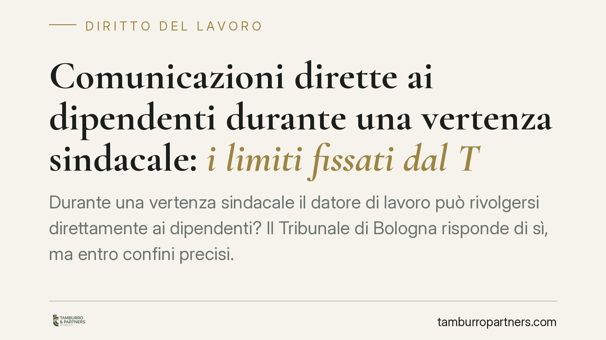

Comunicazioni dirette ai dipendenti durante una vertenza sindacale: i limiti fissati dal Tribunale di Bologna
Durante una vertenza sindacale il datore di lavoro può rivolgersi direttamente ai dipendenti? Il Tribunale di Bologna risponde di sì, ma entro confini precisi. La comunicazione aziendale non è di per sé condotta antisindacale ex art. 28 dello Statuto: diventa illecita solo quando è scorretta o tesa a svuotare il confronto con le sigle sindacali. Una distinzione che incide sulla gestione quotidiana dei conflitti collettivi.

Il caso
Nel corso di una vertenza sindacale, un'azienda aveva inviato comunicazioni dirette ai propri dipendenti, bypassando in parte il dialogo con le organizzazioni sindacali. Le sigle hanno lamentato una condotta antisindacale, chiedendo l'intervento del giudice ai sensi dell'art. 28 della Legge 300/1970.
Il Tribunale di Bologna ha respinto la lettura più rigida. La semplice esistenza di una comunicazione diretta tra datore e lavoratori non basta a integrare l'illecito. Conta il contenuto, il tono e la finalità del messaggio.
Inquadramento normativo
L'art. 28 dello Statuto dei lavoratori (L. 300/1970) tutela la libertà e l'attività sindacale: il giudice può ordinare la cessazione del comportamento del datore che impedisca o limiti l'esercizio dei diritti sindacali e il diritto di sciopero.
La norma non vieta però al datore di comunicare con il proprio personale. Il rapporto di lavoro resta bilaterale: azienda e dipendente sono controparti dirette di un contratto. La presenza di una vertenza collettiva non sospende questo canale, né attribuisce alle sigle sindacali un monopolio informativo nei confronti dei lavoratori.
Il punto di equilibrio, secondo il Tribunale, sta nel confine tra informazione legittima e interferenza. La comunicazione aziendale diventa antisindacale quando è finalizzata a inquinare il confronto: screditare i rappresentanti, pressare i dipendenti, indurli a disertare le iniziative collettive o a diffidare delle sigle. In questi casi il messaggio non informa, ma manipola.
Implicazioni pratiche
Per il datore di lavoro la pronuncia conferma uno spazio di manovra, ma lo delimita con nettezza. Comunicare ai dipendenti la propria posizione su una trattativa, spiegare le ragioni economiche di una scelta, chiarire il contenuto di una proposta: tutto questo rientra nell'esercizio legittimo della libertà di impresa e di espressione.
Il rischio nasce quando il contenuto scivola verso la delegittimazione delle organizzazioni sindacali o verso forme di pressione, anche indiretta. Frasi che suggeriscono conseguenze negative per chi aderisce allo sciopero, o che presentano le sigle come ostacolo al benessere dei lavoratori, espongono l'azienda al ricorso ex art. 28 e a un ordine di cessazione con pubblicazione del provvedimento.
Per le organizzazioni sindacali il quadro è speculare: non ogni comunicazione aziendale è censurabile. Serve dimostrare che il messaggio ha una finalità o un effetto lesivo dell'attività sindacale, non la sua mera esistenza.
La differenza non è formale. Un'azienda che gestisce male il tono di una comunicazione interna può trasformare una legittima informativa in una condotta sanzionabile. E un sindacato che impugni comunicazioni neutre rischia il rigetto del ricorso.
Cosa fare in concreto
- Verificate il contenuto prima dell'invio: limitate la comunicazione ai fatti, alle proposte e alle ragioni aziendali, evitando giudizi sulle sigle sindacali o sui loro rappresentanti.
- Eliminate ogni forma di pressione: non collegate, nemmeno implicitamente, l'adesione a iniziative sindacali a conseguenze sul rapporto di lavoro.
- Mantenete aperto il canale con le sigle: la comunicazione diretta ai dipendenti non deve sostituire né svuotare il confronto formale con le organizzazioni sindacali.
- Documentate le comunicazioni: conservate testi, date e destinatari, per poter dimostrare la natura informativa e corretta dei messaggi in caso di contenzioso.
- Valutate il contesto complessivo: una singola comunicazione va letta insieme alle altre; una strategia che nel suo insieme punta a isolare il sindacato può essere censurata anche se i singoli messaggi appaiono neutri.
Consigliamo, nelle fasi di vertenza, di far esaminare preventivamente le comunicazioni rivolte al personale, così da calibrarne tono e contenuti ed evitare contestazioni ex art. 28.
---
*Contributo informativo a cura di Tamburro & Partners - Avv. Giuseppe Tamburro. Non costituisce parere legale.*
Ogni storia di lavoro ha i suoi tempi.
Se gestisci HR e vuoi un confronto su contenzioso, ispezioni o licenziamenti, scrivi allo studio. Ti rispondiamo entro un giorno lavorativo.